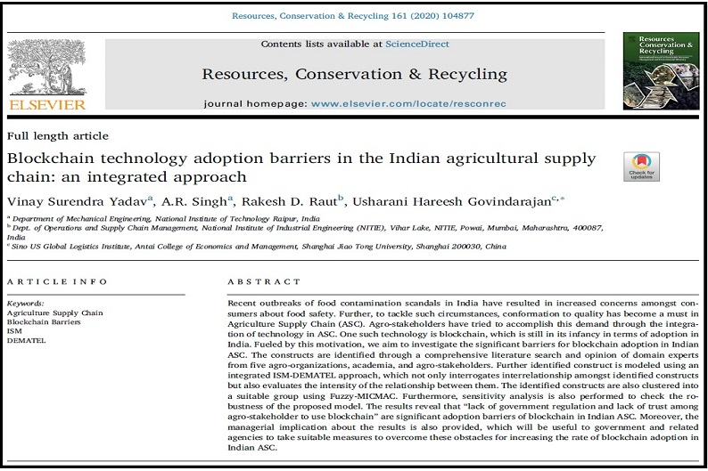

Dr. Hareesh
Assistant Professor, Shanghai Jiao Tong University
Associate Editor, IET Collaborative Intelligent Manufacturing Journal
Publications



Assistant Professor, Shanghai Jiao Tong University
Associate Editor, IET Collaborative Intelligent Manufacturing Journal
Yadav, V. S., Singh, A. R., Raut, R. D., & Govindarajan, U. H.* (2020). Blockchain technology adoption barriers in the Indian agricultural supply chain: An integrated approach. Resources,Conservation & Recycling (Early Access, DOI: 10.1016/j.resconrec.2020.104877).
Trappey, A. J.*, Trappey, C. V., Chang, C. M., Shih, X. Y., Govindarajan, U. H., Gupta, N., & Su, I. A. (2020). Behavioral Therapy for Phobias Using Immersive Virtual Reality Technology. Journal of the Chinese Society of Mechanical Engineers, vol. 41, no. 2, pp 131~140.
Raut, R. D., Gotmare, A., Narkhede, B. E., Govindarajan, U. H.*, & Bokade, S. U. (2020). Enabling technologies for Industry 4.0 manufacturing and supply chain: concepts, current status, and adoption challenges. IEEE Engineering Management Review (Early Access, DOI: 10.1109/EMR.2020.2987884)
Trappey, A. J., Trappey, C. V., Govindarajan, U. H.*, & Sun, J. J. (2019). Patent Value Analysis Using Deep Learning Models - The Case of IoT Technology Mining for Manufacturing Industries. IEEE Transactions on Engineering Management (Early Access, DOI: 10.1109/TEM.2019.2957842).
Govindarajan, U. H., Trappey, A. J., & Trappey, C. V. (2019). Intelligent Collaborative Patent Mining Using Excessive Topic Generation. Advanced Engineering Informatics, vol. 42, pp. 100955.
Govindarajan, U. H.*, Sheu, D. D., & Mann, D. (2019). Review of Systematic Software Innovation Using TRIZ. International Journal of Systematic Innovation, vol. 5, pp. 72-90, ISSN: 2077-7973.
Trappey, A. J., Trappey, C. V., Govindarajan, U. H.*, & Jhuang, A. C. (2018). Construction and Validation of an Ontology-based Technology Function Matrix: Text Mining of Cyber Physical System Patent Portfolios. World Patent Information, vol. 55, pp. 19-24.
Govindarajan, U. H., Trappey, A. J., & Trappey, C. V. (2018). Immersive Technology for Human Centric Cyber Physical Systems in Complex Manufacturing Processes: A Comprehensive Overview of Global Patent Profile Using Collective Intelligence. Complexity.
Trappey, A. J., Trappey, C. V., Govindarajan, U. H., Sun, J. J., & Chuang, A. C. (2016). A Review of Technology Standards and Patent Portfolios for Enabling Cyber-Physical Systems in Advanced Manufacturing. IEEE Access, vol. 4, pp. 7356-7382.
Trappey, A. J., Trappey, C. V., Govindarajan, U. H., Chuang, A. C., & Sun, J. J. (2016). A Review of Essential Standards and Patent Landscapes for The Internet of Things: A Key Enabler for Industry 4.0. Advanced Engineering Informatics, vol. 33, pp. 208-229.